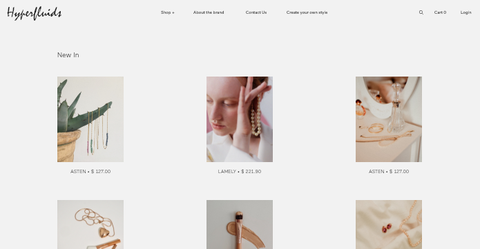

Hyperfluids
Hyperfluids
UI/UX
Design / Interaction Design
Web Application
An every
young community.
Hyperfluids started up in
2013 with intention of dressing young people who are engaged
with their environment, who live in the community and relate to each other. Working
with Hyperfluids was an incredible experience, watching them expand their brand with
my help.

Textile collection backed up by
the footwear, accessory, jewellery,
fragrance, and sunglasses lines.
With
Hyperfluids brings the latest international trends to the street in the form of easy, comfortable and casual
clothes. The Hyperfluids collections are conceived with the idea of dressing men and women with a young
mindset, taking into account that age is not an obstacle when choosing our wardrobe. The challenge was in
finding a way to convey that messaging
through the branding.



Evolving at the same pace as the
customer.
Hyperfluids are always watching out for new technologies, social movements and the latest artistic or musical
trends. All of this can be seen reflected not only in its designs but also in stores. Inspired by the changes
in Hyperfluids the design evolved over time to what it is now.

Music, screens, projections,
modern graphics, fashionable,
colours...
Hyperfluids's public is characterized by adventurous young people, who are aware of the latest trends and are
interested in music, social networks and new technologies. Their online presence had to conform to those same
ideas.